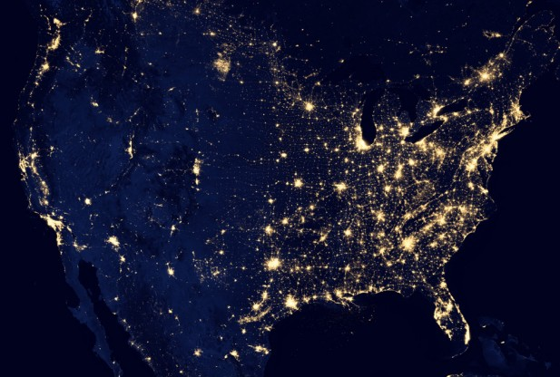

This issue of Light Bomb lighting in Annapolis has been an ongoing issue since the year 2000 when we began this page. And now (August 2014) The Maryland Department of Transportation has not fixed it but made matters even worse with the new lights on the Academy Bridge shwon below! Turning Night into day and ruining the night sky, driver's night vision, and views of Annapolis. You can't see the stars, nor even the beautiful night shoreline of historic Annapolis.
Back in Sept 2004 we were finally successfull in getting the USNA Public Works Department to try a cheap-fix solution to its Dark Sky polution from its historical (but inefficient and poluting) light-bomb street lamps. Three lamps were to be painted internally with a white stripe to block the intense glare as suggested below, as a cheap solution to the night sky polution without any detraction to the historical appearance of the lamps. The three lamps were to be the three closest to the Observatory near college creek which make the observatory nearly useless at night (when the stars are supposed to be UP. [Unfortunately, PWC was out-sourced to contractors and the work was never finished].
Now things are even worse with the new Academy Bridge LIGHT BOMB lighting. The bridge is now as bright and blinding to drivers as the football field is when it turns night-into-day in the Stadium! Yes, the new academy bridge lights installed by the Maryland Department of Transportation are high cutoff modern lights that minimize inefficient light leakage upward into the dark sky, but they are an abomination to good street lighting due to their excessive brightness and spot glare. These lights are very intense directly into drivers eyes destroying neight vision and reducing driver, bicycle and walking safety. MORE LIGHT does not improve safety when it is a distraction in itself!
See the opinion in the Capital Gazette on this Bridge Lighting topic. There are 3 things that need to be done:
Below is the original web page calling for action since the year 2000. [To give the Academy credit, there have been improvements in most lights by reducing night sky illumination, better protecting the night sky, but still the new lights, just like the Bridge lights have an extremely intense white light-spot at the top, directly into drivers and pedestrians eyes that soucl eb eliminated with just a dab of internal white paint in the right spot.
BAD LIGHTING: ... GOOD LIGHTING:
The older street lamps at USNA are euphamistically referred to as LIGHT BOMBS because they direct light and wasted energy indiscriminantly in all directions... trying to turn night into day. See the small graphic top left. They pollute the night sky, harm the visibility of pilots, impact driver safety with glare directly into the eyes of drivers, and waste half of their energy radiating light upwards where no one needs it or wants it. Good lighting, as shown next to it on the top right, wastes no energy upwards and directs the light onto the ground where it is needed. Our proposed cheap-fix is shown below:
THE CHEAP FIX: A typical bureaucratic fix would be to replace all fixtures at tremendous cost. But since such costs would be prohibitive, there is also a very simple and almost free solution. During routine lamp replacement, while the globe is off the post, simply paint the top inside of the globe with gloss white paint. The result is a cheap fix:
The Night Sky Value: Aside from the asthetics of removing the USNA Blight on the night sky horizon in Annapolis, the USNA will be the prime beneficiary, since its own Clark Telescope and Observatory will see immediate improvement in its visibilty. As one of the attractive public symbols of USNA technology dating back to the 1800's, cleaning up the sky in the vicinity of the telescope could be the first step and a demonstration phase of this innexpensive technique. Not just astronomers, but kids of all ages need to see the sky and be aware of our place in the universe.
 ENERGY AWARENESS: Since October is national energy awareness month, I can think of no better time to get bring awareness to this issue. The image at right taken from space shows the complete waste of energy we are guilty of in our wasteful directing of outdoor lighting upwards into space instead of onto the ground where it is needed..
The wasted light you see in this image is not due to the outdoro light that falls on the ground, but the direct light that shines upward from outdated outdoor lighting fixtures that does not shield the sky and direct the light downards where it is intended. Wasting half of our lighting energy into space instead of on the ground.
As a result, the dark sky is completely ruined by this light polution and kids in Annapolis can only see a few of the brightest stars and have never seen the Milky Way and our place in the Universe.
UPDATE October 2014!
SHOCKING! Look at the light blotch in the upper left-of-center the size of Los Angeles! This is in northwest North Dakota! There is no human habitation up there. What you are seeing is the light from tens of thousands of oil wells drilling and fracking their way to the last drops of oil on Earth. And of today, driving the price of gas down to below $3 a gallon in a race to see how fast we can burn carbon until there is none left!
Sheesh
Signed: Bob Bruninga, US Naval Academy Satellight Lab, 410-293-6417 lastname@usna.edu
..